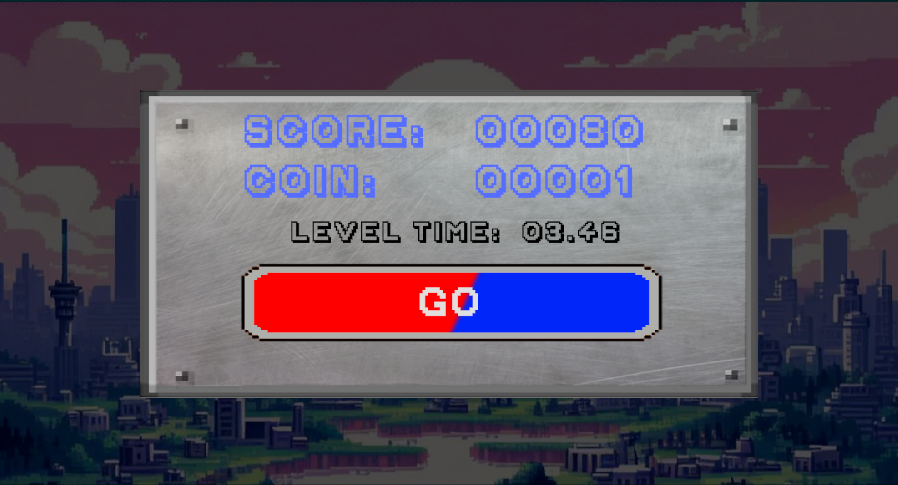

An immersive game that throws you into the heart of NeutralVille, a world with perfect balance and neutrality. But the equilibrium once defined has been destroyed by a scientific accident. As a player you will deal with enemies and obstacles, the concept of balance isn't just a theme, but a gameplay mechanic. As you traverse through NeutralVille's levels you will have to solve intricate puzzles and face formidable challenges, you'll need to make choices that will also influence your teammate game.
BeNeutral at its core is developed as a 2D side-scrolling platformer divided into 3 main levels, where the two main playable characters, Andy and Cathy, find themselves separated on the opposite sides of the screen. The main goal of the game is to progress through each level, collaborating to defeat the many enemies and overcoming the obstacles obstructing the way to the end.
The game revolves around the idea of "reconciling the opposites" with a focus on magnetism. The two characters progress through the levels on the two opposite sides of the platform and level terrain (i.e. one character is above, the other one below), with such levels developing on both sides of the screen even in different ways, which sometimes oblige the two players to collaborate towards the final goal.
As the two characters want to be reconciled, they are sensible to being separated too much. Thus, if their relative distance exceeds a certain threshold for too much time (for example, 3 seconds), the two playable characters will start losing their magnetic charge. After some time their charge will deplete to zero, leading to a game over.
Each character is able to use their magnetic charge abilities to overcome obstacles and progress towards the end, and are able to shoot magnetic bullets to defeat enemies on their way.
Each level (described in detail in the World section) is themed around a specific area of the world, and has a checkpoint in the middle to let the players restart from there instead of the beginning of the world in case of game over.
Each level also contains multiple enemies and environmental traps, among which we have:
Levels contain some small environmental puzzles to encourage collaboration between players. To progress in levels, some parts are locked behind magnetic barriers which damage players that attempt to pass, but let through the player with the opposite polarity when their magnetic field is active. In addition, magnetic platforms can be activated by the player with matching polarity to make them move and help the other player progress.
Life tokens (used to resume from the latest checkpoint) can be obtained after collecting a set amount of coins (50 coins total, summing both players' coins). Coins can be obtained by collecting the ones spread across levels or by defeating enemies, and the total number of earned coins is always shared between players.
Players can also gain stamina, which is restored over time after using it to activate the magnetic field.
Characters also have two main statistics: magnetic charge and stamina.
The magnetic charge level acts as the characters' health. Players can lose their charge in multiple ways, for example by being hit by enemy attacks or due to it being stolen by oppositely-charged enemies (which, as a result, increase their health), and need to keep it above zero in order to avoid game over. When the game starts, a set number of life tokens are given to players, and whenever one of the two characters dies a life token is consumed and the game is restarted (for both players) from the latest checkpoint, but if no tokens are available the players will need to restart from the beginning of the first level.
The stamina level is used to let players strategically take advantage of some of their abilities without using them too much repetitively. Each ability use will cost some predefined amount of stamina, and if its level is not enough the ability cannot be activated. Stamina is then regained gradually over time using a linear time-dependent law, in the form of ∂Stamina = K * ∂T with K being the stamina points per second to be awarded and ∂T the delta time (in seconds).
Players are subject to gravity which has different directions depending on the side of the screen the player is located (downward gravity for the player at top, upward for the one at the bottom). Movement is horizontal with some acceleration/deceleration being present when starting/stopping to walk or run, but players can also jump to reach higher platforms.
Combat is both close-range and at a distance using ranged weapons or ranged abilities. When using ranged attacks, each attack has a maximum range of effect, after which it decays, the bullet disappears and the attack has no effect. Abilities (e.g. magnetic field) can be used by players to deal additional damage or defend from specific attacks, but consume stamina, so they cannot be used continuously.
Enemies are controlled by an internal game "AI", which takes into account the aim of the enemy and tries to reach such goal.
NeutralVille wasn't always a place full of harmony and equilibrium. After decades of struggles and conflicts, the townspeople finally managed to isolate themselves from the rest of the world. With the help of a brilliant scientist, they built a forcefield around the town to protect it from outside danger and allow the citizens of NeutralVille to live in this utopia. However, this forcefield required a lot to maintain, and the scientists had to continuously enforce it using advanced technologies to prevent it from weakening.
After years of peacefulness, the grandson of the genius scientist who helped erect the barrier was born. He was smart, and hardworking, but also mischievous at times. He aspired to be a great scientist, just like his grandfather. So, he joined the scientists who worked in the energy laboratory, and he was on the cusp of making a grand discovery that would help the force shield last forever without the need for constant reinforcement. However, this discovery would require the collective power of every person in town.
At first, the other scientists were skeptical about this, as it would drain every ounce of power from the town and make it vulnerable if something went wrong. But eventually, everyone became excited about the prospect, wholeheartedly believing in this young scientist just as the older generation believed in his grandfather. All the scientists came together and decided to help the young scientist achieve this goal. They invested all their resources, efforts, and time into it.
When it came time to test his invention, he realized he had made an error, but it was too late to fix it as the experiment had already begun. Not knowing what to do, he told everyone to evacuate and stayed in the lab, hoping that he could somehow stop the experiment or at least limit the catastrophe that would happen. Everyone else ran out of the lab, horrified, as it looked like the lab was about to explode.
In his last attempt to save everyone, the young scientist decided to contain the explosion in another dimension using a device he had built a while ago but had never been able to test it as he never knew what the consequences would be. In this desperate moment, he activated the device, and just as the device started to work, the explosion happened. In the aftermath of this horrific accident, the scientist found himself severed from another part of himself, and his mind and soul were split into two. And thus, the journey of our protagonist begins.
In the peaceful town of NeutralVille, where citizens coexisted harmoniously, embracing their neutral charges and stability, life unfolded like scenes from a Medieval European town, but with a touch of high-tech marvels. As the citizens peacefully slumbered, they charged themselves, preparing for another day of routine activities. They went about their days, buying groceries, attending school, engaging in lively conversations, and dancing in the town square. Amid this serene setting, a brilliant yet eccentric scientist embarked on an experiment within the confines of a state-of-the-art laboratory. The purpose of this experiment remained a mystery, shrouded in the scientist's ingenious mind.
However, fate took an unexpected turn one fateful day when the lab, engulfed in a blinding explosion, tore the fabric of their peaceful existence asunder. The world was abruptly split into two distinct realms: the positive world and the negative world. Amidst the chaos, the scientist miraculously survived, but their being was divided into two entities – the optimistic and positive-minded Andy, and the cunning and resourceful Caty, embodying the negative polarity. Now separated, the duo found themselves in parallel worlds, each facing unique challenges and obstacles.
Bound by a powerful connection, positive Andy and negative Caty embarked on separate journeys, determined to reunite with one another. Their paths were laden with hurdles, requiring wit, courage, and ingenuity to overcome. With each level they traversed, they inched closer to the moment when their positivity and negativity would harmonize once more, bridging the gap between their worlds and restoring the balance that had been disrupted. Little did they know, their adventure would not only test their individual strengths but also teach them valuable lessons about the power of unity, resilience, and the unwavering spirit of hope in the face of adversity.
In the serene surroundings of Harmony Heights, Andy and Cathy find themselves standing on opposite sides of a series of simple platforms. The level begins with easy steps, encouraging players to coordinate their movements and magnetic charges. As they progress, they encounter the first challenge: a magnetic barrier blocking their path. To deactivate it, they must work together, standing on two connected pressure plates simultaneously. By doing so, they gain access to a treasure chest, revealing the Magmallet for Andy and the Fluxblade for Cathy.
With their new weapons in hand, they continue their journey, facing Magneblocks - small, cubic robots attempting to steal their magnetic charge. Andy and Cathy collaborate, using their unique abilities and newfound weapons to defeat these enemies. They collect coins along the way, which can be useful for future levels.
In Magnetic Mayhem, the landscape becomes more complex. Moving platforms and dynamic obstacles present a challenge as Andy and Cathy navigate through this level. They encounter Gaussguards, slow-moving golems with magnetic shields, requiring strategic coordination to defeat. The level also introduces rotating spikes, forcing the players to make precise jumps and find alternative paths.
As they delve deeper, they come across an EMP Wall, activated as they enter a specific section of the level. The Wall chases them, gradually gaining speed, urging them to complete the section swiftly. Andy and Cathy's magnetic synergy becomes crucial as they work together to outmaneuver the chasing wall, ensuring their survival.
At Equilibrium's End, the final showdown awaits. . Andy and Cathy must confront the synchronized halves simultaneously, requiring impeccable teamwork and coordination.
With their mission accomplished, Andy and Cathy stand side by side, their magnetic charges perfectly balanced once more, symbolizing the restoration of harmony and unity in NeutralVille.
Puzzle game, 2D
PC game.
The game is based on cooperation and collaboration with your teammate. The necessary number of player it's 2, that represents the two main characters of the game.
The two players will walk on the two sides of the same level, one on the opposite side of the other.
Where you can start a new game, load a game you saved before## Game Shell
Where you can start a new game, change the options or give a feedback of the game
Where you can chose game difficulty
Animated screen for loading of the levels
Screen of the pause menu during game
Where you can see the points you achived during the level 
Gameplay screen, with a camera that follows your movements.